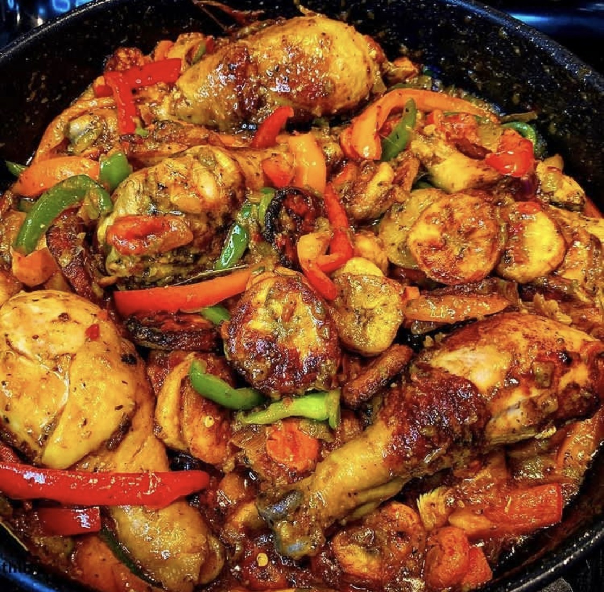

Chef Ashley's Poulet DG
Back to home

The signature poulet-DG
Poulet, is the French word for Chicken. DG stands for “Directeur Général” Direct translation for this dish reads Director General Chicken.
It’s one of those dishes saved for special guests. In fact, I still reserve it for special occasion, in my case dinner at home with some good company.
Sometimes I brood over what made it so special such that it graced mom’s dinner table only when my father’s work colleagues were coming over.
Ingredients
- 1-2 large semi ripe plantain
- 1/2 cup canola oil for frying
- 1 lb boneless chicken thighs
- 1/2 teaspoon white pepper,garlic,Onion,salt
- 2 large Roma tomatoes diced,carrots,parsley,green beans,green onion
Steps
- Rinse and pad dry chicken with paper towel. Add all chicken marinade ingredients and mix well.
Let sit in the refrigerator for about an hour or more.
-
Trim ends off plantains, Slice plantains into slanted discs about 1/2 inch thick.
-
Carefully fry plantains on both sides until golden brown. Remove and set on a paper towel to absorb the excess oil
-
Wash vegetables. Trim edged and cut into one inch pieces
-
In a blender or food processor, combine garlic cloves, ginger, green onions, habanero, parsley and 1/4 cup of water.
Blend until it forms a creamy fresh spice blend
-
In a large skillet, heat oil on medium- medium high. Brown chicken on each side until golden and crispy ( ~ 3 minutes on each side). Set aside
-
Add in diced tomatoes, vegetables,and all seasoning, Add in chicken, remaining chicken broth , platains, stir and let simmer for about 3 minutes.
-
Taste and season with chicken bouillon if necessary. Garnish with some freshly chopped parsley and serve warm.
Back to top